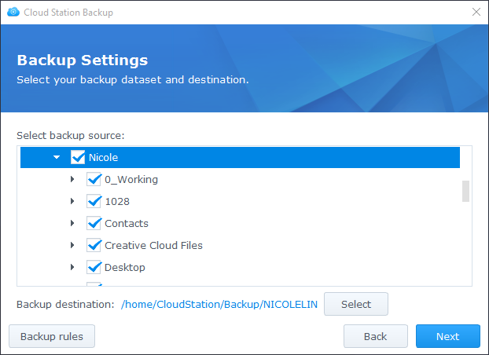

Oversikt
Cloud Station Server er ikke bare en sofistikert synkroniseringsprogramvare på tvers av plattformer, men også en smartere metode for å sikkerhetskopiere personlige datamaskiner. Cloud Station Backup er en umiddelbar og nettverkssparende sikkerhetskopiløsning som tilbyr bedre beskyttelse med opptil 32 historikkversjoner av én enkelt fil.
Sett opp Cloud Station Server på Synology NAS
- Gå til Pakkesenter, finn Cloud Station Server og klikk på Installer.
- Kjør Cloud Station Server.
- Gå til Oversikt og klikk på Last ned nå under Cloud Station Backup. (Du kan også laste ned Cloud Station Backup fra Synology Nedlastingssenter.)
- Kjør installasjonsprogrammet på datamaskinen din og følg instruksjonene for å installere Cloud Station Backup.
- Når installasjonen er fullført, kjører du Cloud Station Backup på datamaskinen din. Klikk på Start nå.
- Angi adressen til den Synology NAS som kjører Cloud Station Server (eller QuickConnect ID), brukernavn og passord. (Du kan også klikke på søkeikonet til høyre for å la Cloud Station Backup automatisk søke etter andre Synology NAS-enheter på ditt LAN.) Klikk på Neste.
- Velg sikkerhetskopikilde og fjern avmerking for undermapper du ikke vil synkronisere. 
- Velg en mappe på din Synology NAS ved å klikke på Velg. Cloud Station Backup vil opprette en sikkerhetskopimappe med ditt datamaskinnavn i målet du har valgt. Mappen home velges som målmappe som standard. Hvis du vil bruke en mappe som ikke er på listen, kontakter du systemadministratoren din. Systemadministratorer kan rådføre seg med Administrere Cloud Station Server-deling i hjelp for Cloud Station Server.
- Klikk på Sikkerhetskopiregler hvis du vil synkronisere filter eller regler.
- Klikk på Neste for å se over sikkerhetskopiinnstillingene dine og klikk påFerdig.
- Du kan se fremdriften i hovedappen.


Last ned eller gjenopprett en tidligere versjon av en synkronisert fil fra Cloud Station Server
- Gå til Cloud Station Server > Versjonshistorikk og finn filen eller mappen du vil gjenopprette.
- Velg filen du vil hente og klikk på Handling. Klikk på Bla gjennom tidligere versjoner. Hvis en fil slettes eller fjernes fra datamaskinen ved et uhell, kan du klikke på Gjenopprett for å gjenopprette den.
- Velg filversjonen du vil laste ned og klikk på Last ned. Eller hvis du er sikker på at du vil gjenopprette den valgte versjonen, klikker du på Gjenopprett for å overskrive den gjeldende versjonen.


5. Ytterligere beskyttelse av dine data
For flere måter du kan beskytte og sikkerhetskopiere dine data, klikker du her for å se veiledninger for andre sikkerhetskopitjenester som DSM tilbyr.